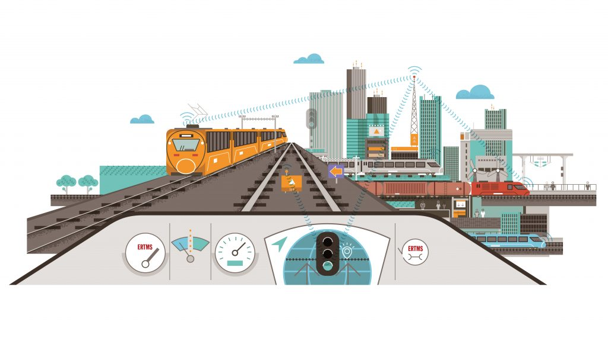

In this project we modelled a variance of European Railway Traffic System (ERTMS) and formally verified the
location-specific test model for a location-specific design for an ERTMS controlled rail yard
using Real-Time Maude, for example, an interlocking tables and rules with messages to be
sent by the RBC that can be used to test the location-specific RBC realization and inter-
locking computer.

This project explores and creates a simulator with which one can test various test cases. For example, an algorithm for self-driving vehicles.
The Healthcare Fraud Prevention Partnership (HFPP) aims to securely share information among insurance-paying entities for the purpose of detecting fraud in healthcare reimbursements. This project will define the network architecture and data standards for a decentralized data exchange, and develop a proof-of-concept implementation that can be used by a trusted third party.
This project explores and creates a simulator with which one can test various test cases. For example, an algorithm for self-driving vehicles.
This project explores and creates a simulator with which one can test various test cases. For example, an algorithm for self-driving vehicles.